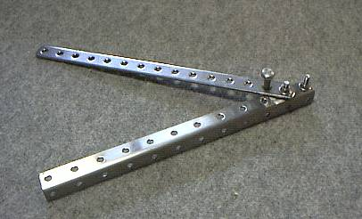

飛行日誌
ワイヤーベンダー

自作のワイヤーベンダー
練習機を自作しようと思い、CADでコツコツと図面を書き始めた。インターネット上には、各種翼型のデータベースがあり、GIFやDXFなどの画像・データが簡単に手に入る。ありがたいことである。
で、練習機はやはり３車輪式にして、離着陸の容易な機体にしようかなどと考えていると、ピアノ線を曲げ加工して脚を作る必要が出てきた。模型用品のメーカーからは、専用の工具が売り出されているのだが、けっこうなお値段がついている。ここは一つ自作を！ と意気込んでホームセンターに出かけ、多目的棚を組み立てるのに使う穴あき鋼材、平型とＬ型、その穴に通るボルト・ナットとちょっときつめのボルトを買ってきた。
先端のボルトはワイヤーの保持用、２番目のボルトは同じくワイヤーの保持と、２種の鋼材をリンクさせる役目、平型鋼材に埋め込んだ３番目のボルトがワイヤーをグイッとこじて曲げる仕組みである。３番目のボルトは、平型鋼材に空いてある穴をドリルで少々大きくして差し込んだ後、瞬間接着剤とエポキシ接着剤を併用して固定した。
太さ５mmのピアノ線くらいは簡単に加工できる。材料費はおよそ1,000円だったので、市販品の約半分で自作できたことになる。
Wingtips 目次へ
サイトマップ
ホームへ
お問い合わせ